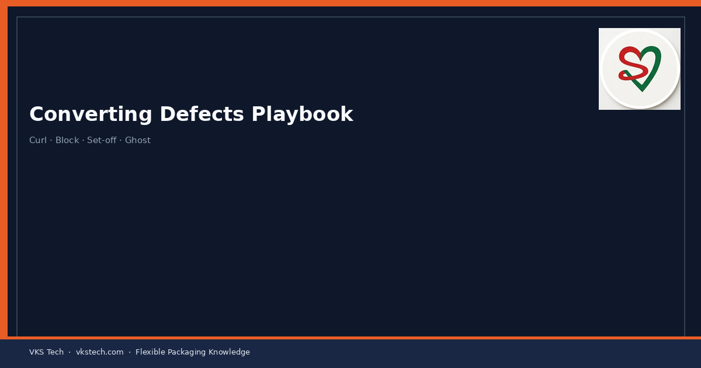
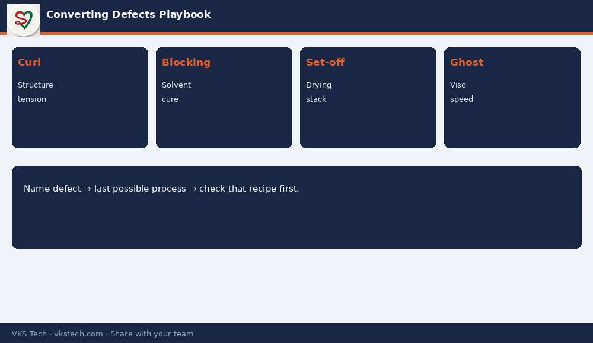

🔍 Curl, Blocking, Set-off, Ghosting, Pinholes in Print — A Short Playbook So the Floor Does Not Argue in Circles.
📖 12-min read · Defects · QC + Production
Converting defects look different from metalliser OD issues. This playbook lists the common ones, first checks, and which process usually owns the root cause — so meetings move from blame to action.
📌 Quick Map
- Curl: structure imbalance, tension, moisture
- Blocking: residual solvent, incomplete cure, wind pressure
- Set-off: incomplete drying, high stack pressure
- Ghosting / smearing: viscosity, speed, drying
- Print pinholes / missing: cylinder/anilox, contamination, doctoring

💡 Method: Name the defect → list last process that could create it → check that process recipe first. Do not start at the customer complaint and work backwards only by opinion.
🔍 कर्ल, ब्लॉकिंग, सेट-ऑफ, घोस्टिंग, प्रिंट पिनहोल — छोटा प्लेबुक ताकि फर्श पर बहस घूमे नहीं।
📖 12-मिनट पढ़ें · दोष · QC + प्रोडक्शन
💡 विधि: दोष नाम → आखिरी संभावित प्रोसेस → पहले उसी रेसिपी की जाँच।